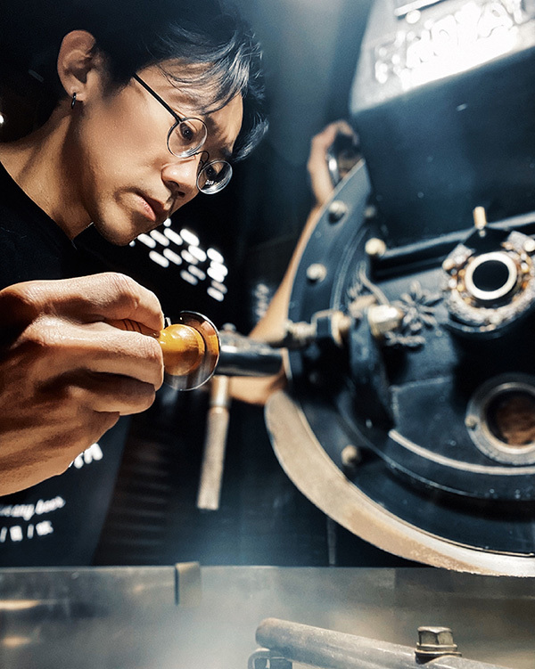
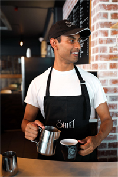
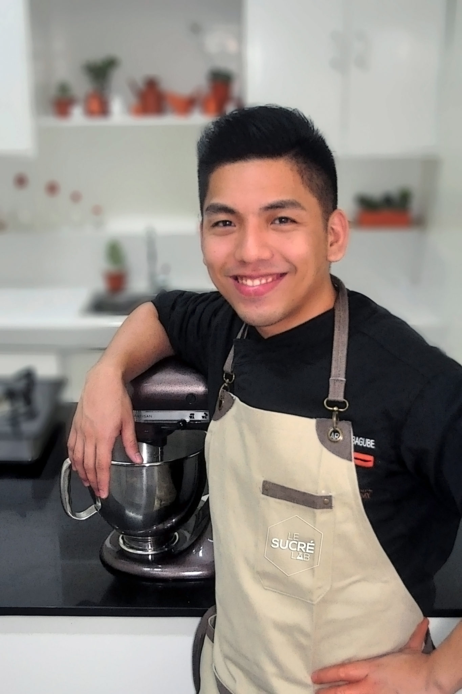

<!DOCTYPE html>
<html lang="en">
<head>
    <meta charset="UTF-8">
    <meta http-equiv="X-UA-Compatible" content="IE=edge">
    <meta name="viewport" content="width=device-width, initial-scale=1.0">
    <title>Document</title>
    <link rel="stylesheet" href="./goodtime.css">

    <style>

  
    /* ------輪播圖---- */

    .slider {
        width: 1200px;
        margin: auto;
    }
    .slider_pic img {
        width: 100%;
        vertical-align: top;
    }

 
    
      
  /* ----品牌精神------- */
  .faith {
     width: 1200px;
     margin: auto;
     padding-top: 50px;
     display: flex;
     flex-direction: column;
     background-color: bisque;
     
    
 }
 .faith_itme {
     width: 800px; 
     display: flex;
     position: relative;
     animation: cross 3s ease-in forwards ;
     
 }
 .item2 { 
    margin-left: auto;
    position: relative;
    animation: cross2 3s ease-in forwards ;
 }
 .faith_itme .pic {
     width: 400px;
 }
 .faith_itme .pic img {
     width: 100%;
     vertical-align: top;
     border-radius: 20px;
 }
 .faith_itme .text {
     width: 300px;
     margin-left: 50px;
     margin-top: 30px;
     text-align: justify;

 } 
 .item2 .text {
     margin-right: 50px;
    }
  
.text p {font-size: 18px;}

 .faith_itme .text h3{
     margin-top: 20px;
     margin-bottom: 10px;
     font-size: 30px;
 }

    @keyframes cross { from {  left: 0px; opacity:0;  }to { left : 200px ; opacity: 1; } }
    @keyframes cross2 { from {  left: 0px; opacity:0;  }to { left : -100px ; opacity: 1; } }

    /* 咖啡師傅介紹 */

    .intro {
        width: 1200px;
        margin: auto;
        text-align: center;
        background-color:#fff7ccd8;
        }
    .intro h2 {
        font-size:  50px;
        padding: 30px;
        color: #3a3204;
    }
    .master {
        width: 1200px;
        display: flex;
        background-color:#fff7ccd8 ;
    }

    .master_pic {
          width: 400px;
      }
    .master1 {
        border-top: 1px double #666;
    }
    .master_pic img {
          width: 100%;
          vertical-align: top;
      }
    .master_text {
          width: 600px;
          margin-left: 50px;
          padding-top: 50px ;
          text-align: justify;
          
      }
      .master_text h2 {
          padding: 10px 0px;
          font-size: 30px;
          color:#2b2503 ;
      }
      .master_text span {
          display: inline-block;
          padding: 5px;
          padding-left: 18px;
          font-size: 20px;
      }
      .text2 {
          margin-left:-0.1px;
          text-align: justify;
         
      }
      .pic2 {
          margin-left: 50px;
      }


      


    </style>
</head>
<body>

 <section class="title">
        <nav>
            <div class="title_logo">
             <a href="./01index.html"> 
            </a>  
            </div>

            <div class="title_list" >
                <a href="./02brand.html" >關於好時光</a>
                <a href="./03coffee bean.html">精選咖啡豆</a>
                <a href="./04equipment.html">咖啡器材</a>
                <a href="./05school.html">咖啡學院</a>
                <a href="./06shop.html">聯絡我們</a>
            <!-- -----少兩個可以點集的icon -->
        </div>
    </nav>
</section>


<!-- 輪播圖 -->

<div class="slider">
    <div class="slider_pic">
        
    </div>
</div>


    <!-- -----精神理念  -->

    <div class="faith">
        <div class="faith_itme">
             <div class="pic">
                
            </div>
            <div class="text">
                <h3>專業烘焙手法</h3>
                <p>本店的咖啡師傅擁有國際的烘焙認證及多年烘焙手法，以獨特的直火式烘焙加上科學化的數據，提供不同以往的咖啡風格。</p>
            </div> 
        </div>

        <div class="faith_itme item2">
             <div class="text">
               <h3>精心挑選</h3>
               <p >每批採購的生豆有專業杯測師把關，達到我們的品質標準才進行購買，每一粒咖啡豆皆是精挑細選,給顧客最新鮮的咖啡豆。</p>
           </div> 
           <div class="pic">
               
           </div>
          
       </div>
       <div class="faith_itme">
        <div class="pic">
           
       </div>
       <div class="text">
           <h3>高品質</h3>
           <p>每個細節用心嚴格控管，首席烘焙師以高超的技術少量精烘，確保每顆咖啡豆的品質，絕對堅持給顧客最新鮮的咖啡豆。
           </p>
       </div> 
   </div>
</div>


    <!-- 咖啡師傅介紹 -->
<section class="background">
    <div class="intro">
    <h2>好時光 烘焙師傅介紹</h2>
    <div class="master">
        <div class="master_pic">
            
        </div>
        <div class="master_text">
            <h2>●好時光咖啡專賣店－陳義傑 </h2>
            <h2>●專業認證與獲獎 </h2>
            <span> 歐洲精品咖啡協會 烘焙三級認證</span> <br>
            <span>歐洲精品咖啡協會 萃取與研磨三級認證</span><br>
            <span> 歐洲精品咖啡協會 感官三級認證</span><br>
            <span>歐洲精品咖啡協會 生豆三級認證</span>
            <h2>●簡介</h2>
            <span>致力於烘焙出最好的咖咖啡豆而不斷嘗試和努力，至歐洲精品咖啡協會學習，培養烘焙咖啡豆能力，回台後創立好時光咖啡豆專賣店。<span>
          
        </div>
    </div>

    <div class="master master1">
        <div class="master_text text2">
            <h2>●好時光咖啡專賣店－jocky </h2>
            <h2>●專業認證與獲獎 </h2>
            <span>美國精品咖啡協會國際咖啡品質鑑定師</span> <br>
            <span>在2019年學界咖啡比賽冠軍教練</span><br>
            <span>在2018年杯測師大賽香港區八强</span><br>
            <span>國際咖啡調配師及課程內部評審員</span>
            <h2>●簡介</h2>
            <span>jocky於2019來本店擔任本店的烘焙師傅，擁有國際比賽經驗且有豐富的烘焙技術，也是本店重要的烘焙人員之一，因熱愛台灣文化，而長期定居於此。<span>
        </div>
        <div class="master_pic pic2">
            
        </div>
    </div>


    <div class="master master1">
        <div class="master_pic">
            
        </div>
        <div class="master_text">
            <h2>●好時光咖啡專賣店－王貞治</h2>
            <h2>●專業認證與獲獎 </h2>
            <span>美國精品咖啡協會國際咖啡品質鑑定師</span> <br>
            <span>歐洲精品咖啡協會 生豆三級認證</span><br>
            <span>在2018年杯測師大賽香港區八强</span><br>
            <span>國際咖啡調配師及課程內部評審員</span>
            <h2>●簡介</h2>
            <span>從小就熱愛喝咖啡，從而專研咖啡，到美國、歐洲各國學習烘焙技術與咖啡知識，也是本店出色的烘焙師傅，擁有完美主義，堅持烘焙出最好的咖啡豆而不斷努力，也讓本店的咖啡豆品質向來保持穩定。<span>
        </div>
    </div>
    </div>
</section>

   


    

   
<!-- 頁尾 -->

 
<div class="footer">
    <div class="foot_logo">
        <a href="./01index.html"></a>
    </div>
    <div class="foot_text">
        <h2>好時光咖啡豆專賣店</h2>
        <p>地址:台北市太平洋路119號</p>
        <p>Email:Goodtimecoffee@gmail.com</p>
        <p>Phone:080-000-123</p>
    </div>

    <div class="foot_message">
        <div class="message_item">
            <h2>商店訊息</h2>
            <a href="./05school.html">關於我們</a>
            <a href="./02brand.html">品牌精神</a>
        </div>
        <div class="message_item">
            <h2>商品服務</h2>
            <a href="./03coffee bean.html">暢銷咖啡豆</a>
            <a href="./04equipment.html">咖啡器材</a>
        </div>
        <div class="message_item">
            <h2>咖啡學院</h2>
            <a href="./05school.html">職人講座</a>
            <a href="./05school.html">精選文章</a>
        </div>
    </div>
</div>


</body>
</html>